Orientación al cliente
Comprendemos y atendemos sus necesidades con un enfoque en la excelencia y la respuesta inmediata.
23 años de experiencia · NIT 901.126.243-3
Diseñamos, construimos, instalamos y mantenemos redes de gas natural y GLP para uso domiciliario, comercial e industrial. Desde Boyacá, para toda Colombia.
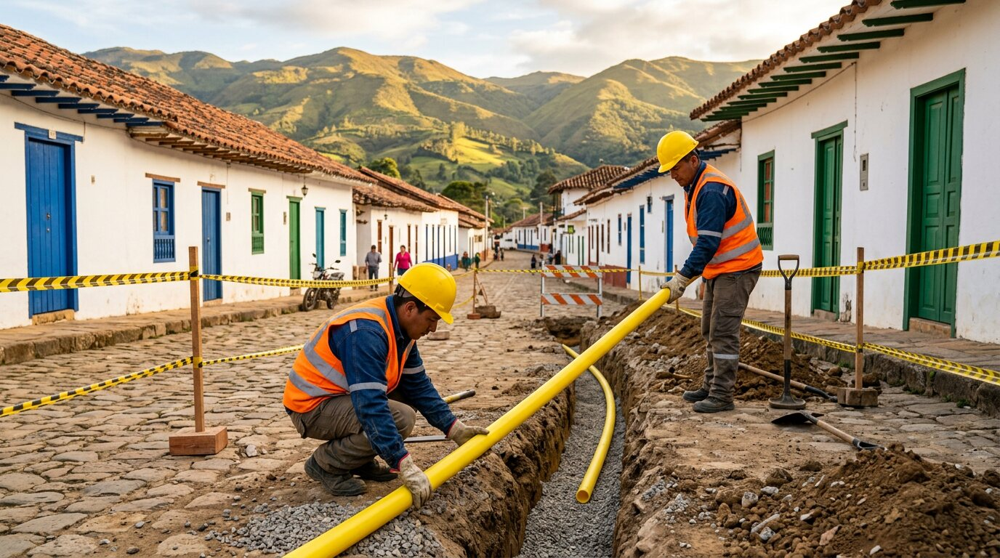
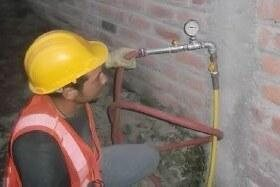
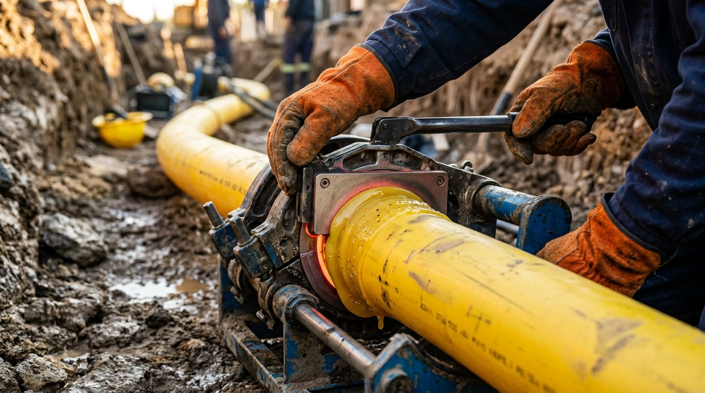
23
años de experiencia en gas natural y GLP
7
contratos de referencia ejecutados
4
departamentos con presencia
20+
municipios atendidos
Entidades que han confiado en nuestro trabajo
Explora
Cada sección tiene su propia página. Elige una para empezar.
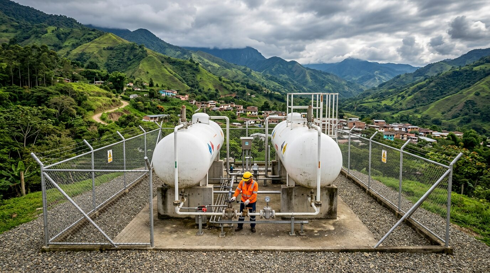
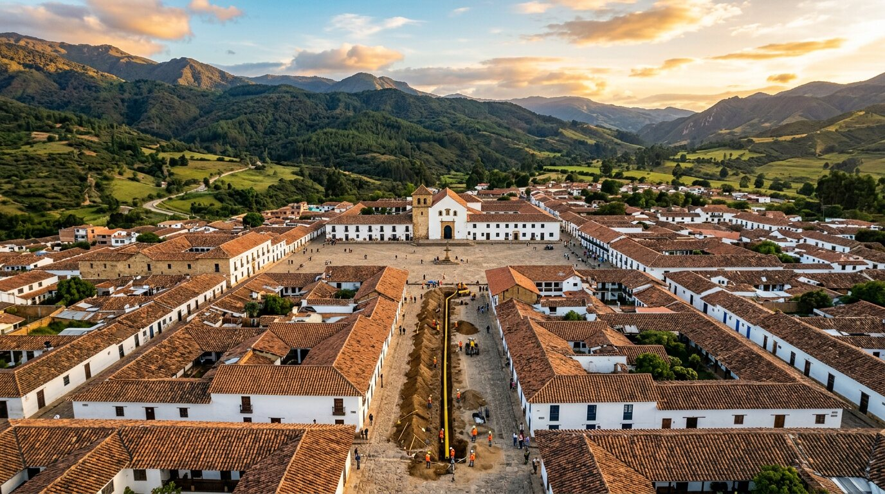
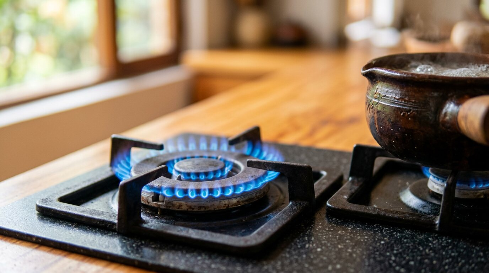
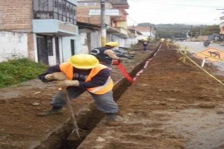
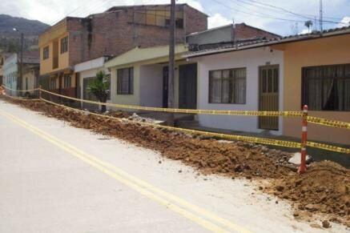
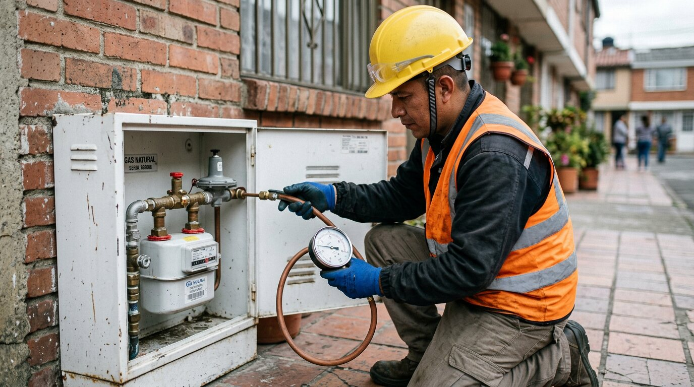
01 · Quiénes somos
TODO GAS SYR S.A.S. se especializa en el diseño, instalación, mantenimiento y reparación de redes e instalaciones internas y externas de gas natural y GLP (Gas Licuado de Petróleo), tanto para uso domiciliario como comercial e industrial. Además, ejecutamos proyectos de obra civil.
Nuestro equipo está conformado por técnicos y profesionales altamente calificados, autorizados y capacitados para ofrecer servicios que cumplen con las normativas vigentes y garantizan la seguridad y eficiencia en todos los procesos.
Mejorar la calidad de vida y la competitividad de nuestros clientes mediante la gestión eficiente y segura de infraestructuras de gas natural y GLP. Operamos bajo principios de sostenibilidad, cumpliendo estrictamente con las regulaciones legales y técnicas, y aportamos nuestra experiencia y conocimiento para garantizar la satisfacción y confianza de nuestros clientes.
Ser la empresa líder y referente a nivel nacional en la prestación de servicios relacionados con el gas natural y el GLP. Nos comprometemos a fomentar el desarrollo sostenible mediante soluciones innovadoras que impulsen el uso seguro y eficiente de estos recursos energéticos.
Creemos en la mejora continua y en la innovación. Proporcionamos servicios de la más alta calidad, con costos razonables y un enfoque centrado en la protección de los intereses de nuestros clientes: excelencia técnica y soporte continuo, para ser una opción confiable y eficiente en el mercado nacional.
Comprendemos y atendemos sus necesidades con un enfoque en la excelencia y la respuesta inmediata.
Estrategias que promueven el desarrollo social, ambiental y económico a largo plazo.
Valoramos a nuestro equipo humano: desarrollo profesional, respeto mutuo y diversidad.
Iniciativas de acción social y compromiso continuo con las comunidades que servimos.
Ética, honestidad y transparencia en todas nuestras operaciones y relaciones.
Innovación y capacitación permanente como pilares fundamentales de nuestro éxito.
02 · Líneas de servicio
Desde el diseño y la excavación hasta las pruebas de hermeticidad y la puesta en servicio. Un solo equipo responsable de todo el proceso.
Construcción de redes de distribución y conexión de viviendas y comercios a la red de gas natural.
Distribución de Gas Licuado de Petróleo por red, desde la planta de almacenamiento hasta cada usuario.
Mantenemos tus instalaciones funcionando de forma segura y eficiente, en el hogar o en la empresa.
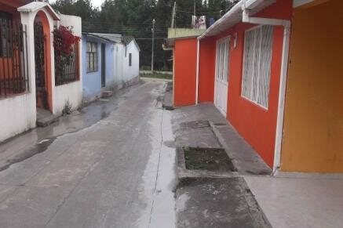
Intervenimos vías y andenes con control técnico y los dejamos como estaban: o mejor.
Elige tu perfil y descubre cómo te acompañamos.
Tu casa conectada con seguridad. Construimos la acometida, el centro de medición y la red interna, instalamos tus gasodomésticos y realizamos la prueba de hermeticidad antes de la puesta en servicio. También reparamos puntos de gas y hacemos mantenimiento preventivo.
Quiero conectar mi casaRestaurantes, panaderías, locales y edificios. Conexiones comerciales a gas natural o GLP, redes internas para múltiples equipos, mantenimiento programado y atención a reparaciones para que tu negocio no se detenga.
Cotizar para mi negocioInstalaciones industriales. Diseño y construcción de redes de gas natural y GLP para procesos productivos, con pruebas de presión, protección de redes y cumplimiento de la normativa técnica aplicable.
Hablar con un ingenieroContratista para distribuidoras de gas. Ejecutamos redes externas de distribución, acometidas e instalaciones internas a gran escala: más de 227.000 metros de tubería instalada para empresas como PUBLISERVICIOS, ENERCER, DISTICON y ONENERGY.
Ver experiencia específicaOficinas en Tunja y Garagoa, departamento técnico especializado y equipo propio, operado por personal técnico certificado:
03 · Metodología
Cada frente de obra sigue una secuencia técnica controlada, con señalización, protección de las redes existentes y pruebas antes de la puesta en servicio.
Estudio técnico del terreno y diseño de la red según las necesidades del proyecto y la normativa aplicable.
Corte preciso y excavación controlada, protegiendo los servicios públicos existentes y el entorno.
Tubería certificada con uniones herméticas por termofusión y técnicas avaladas por fabricantes y normas nacionales.
Cinta de señalización, protección mecánica y señalización de obra para la seguridad pública.
Pruebas de hermeticidad y presión antes de la puesta en servicio, con emisión de certificados.
Anatomía de una zanja
Profundidades y materiales según el diseño aprobado y la normativa técnica aplicable a cada proyecto.
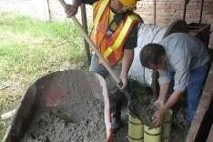
Control de calidad
Toma de cilindros y ensayos de resistencia del concreto de reposición, protección de alcantarillados y verificación de cotas y compactación en cada tramo intervenido.
04 · Experiencia específica
Siete contratos de referencia ejecutados en redes de distribución e instalaciones de gas natural y GLP. Estos son los más representativos.
Construcción de redes de distribución domiciliaria de gas natural: corte y rotura de concreto, excavación de zanjas, tendido de tubería de polietileno, uniones por termofusión, instalación de cinta de señalización, compactación, protección de redes existentes, pruebas de hermeticidad y reposición de andenes y vías.
25.741 m de red en tubería de polietileno
Construcción de acometidas, centros de medición y redes internas para la conexión de gasodomésticos en viviendas y comercios, con pruebas de hermeticidad y puesta en servicio.
11 municipios del Valle de Tenza y oriente de Boyacá
Redes de distribución de GLP por red desde la planta de almacenamiento hasta las viviendas: corte y rotura de concreto, excavación de zanjas, tendido de tubería de polietileno, uniones por termofusión, cinta de señalización, compactación, protección de redes existentes, pruebas de hermeticidad y reposición de andenes y vías.
9.963 m de red en tubería de polietileno
Construcción de redes externas de distribución de GLP y conexiones domiciliarias: corte y rotura de concreto, excavación de zanjas, tendido de tubería de polietileno, uniones por termofusión, cinta de señalización, compactación, protección de redes existentes, pruebas de hermeticidad y reposición de andenes y vías.
191.520 m de red en tubería de polietileno
Gas natural GLP
05 · Instalación domiciliaria
Toca cada punto del esquema y recorre el camino del gas, desde la red de la calle hasta tus gasodomésticos.
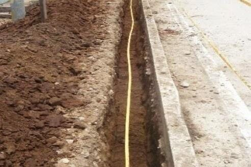
La tubería de polietileno recorre calles y andenes. En GLP inicia en la planta de almacenamiento; en gas natural, en la red de la distribuidora. Va enterrada, señalizada y protegida.
Una vez construida la infraestructura y aprobadas las tarifas por la CREG, inicia la operación y prestación del servicio a los usuarios.
06 · Cobertura geográfica
Presencia en 4 departamentos y proyectos a nivel nacional. Toca un municipio para ubicarlo en el mapa.
Cargando mapa…
Prestación de servicios de instalación, mantenimiento y obra en redes de gas.
Prestación de servicios de instalación, mantenimiento y obra en redes de gas.
¿Tu proyecto está en otro lugar? Ejecutamos proyectos a nivel nacional. Cuéntanos.
07 · Sistema HSEQ
Nuestra política de Salud, Seguridad, Medio Ambiente y Calidad está alineada con las mejores prácticas y con las normativas legales aplicables.
Programas permanentes de salud ocupacional y condiciones de trabajo saludables para todo el equipo.
Seguridad industrial, capacitación constante y equipos de protección personal certificados en el manejo de gases combustibles.
Manejo adecuado de residuos, control de emisiones y protección de los recursos naturales, minimizando el impacto de cada obra.
Materiales de primera calidad, técnicas de instalación avaladas y supervisión constante de los procesos con mejora continua.
08 · Registro fotográfico
Fotografías reales de nuestros frentes de obra. Toca cualquier imagen para verla en grande.
Una fuga puede ser peligrosa. Mantén la calma y sigue estos pasos. Comparte esta guía con tu familia.
Reporta también la fuga a la línea de emergencias de tu empresa distribuidora de gas (aparece en tu factura).
Ni interruptores, ni electrodomésticos, ni el celular dentro del lugar. Una chispa basta.
No uses fósforos, encendedores ni velas. No fumes.
Abre puertas y ventanas para que el gas se disperse.
Ciérrala en el centro de medición o en el cilindro de GLP si puedes hacerlo sin riesgo.
Evacúa a todas las personas y mascotas. Llama a emergencias desde un lugar seguro.
10 · Contacto
Cotización sin compromiso para hogares, comercios, industrias y empresas de servicios públicos.
Oficina principal
Calle 28 No 18-38
Cómo llegarSede
Calle 7 No 4-29
Cómo llegarTu número de radicado es —. Un asesor te contactará pronto en horario de atención.
¿Quieres agilizarlo? Continúa la conversación por WhatsApp:
Continuar por WhatsApp09 · Preguntas frecuentes
¿No encuentras la respuesta? Escríbenos y un técnico te orienta sin compromiso.
Preguntar por WhatsAppEl gas natural llega por la red de la empresa distribuidora. El GLP (Gas Licuado de Petróleo) se almacena en una planta o en cilindros y se distribuye por red o directamente al usuario. Trabajamos con ambos sistemas, desde la red externa hasta la conexión de tus gasodomésticos.
Es una prueba de presión que verifica que la instalación no tiene fugas antes de ponerla en servicio. La realizamos con manómetros al terminar cada red o instalación interna, y forma parte de la certificación del trabajo.
Tenemos oficinas en Tunja y Garagoa (Boyacá) y hemos ejecutado obras en más de 20 municipios de Boyacá y Antioquia, además de servicios en Cundinamarca y Bogotá D.C. También desarrollamos proyectos a nivel nacional. Consulta el mapa de cobertura.
Sí. Hemos ejecutado contratos para PUBLISERVICIOS S.A. E.S.P., Enercer S.A. E.S.P., DISTICON S.A.S. E.S.P. y ONENERGY S.A.S., con más de 227.000 metros de red construida. Puedes descargar nuestra hoja de vida empresarial y te enviamos los documentos (RUT, Cámara de Comercio, registro SIC) para tu proceso de contratación.
Sí. Contamos con personal técnico certificado para la instalación de gasodomésticos, la reparación de puntos de gas y el mantenimiento preventivo y correctivo de las instalaciones.
Completa el formulario de cotización (toma menos de un minuto), escríbenos por WhatsApp al 320 948 5534 o al 322 361 8360, o envíanos un correo a todogassyr@hotmail.com. Te respondemos en horario de atención.
La reposición es parte de nuestro trabajo: compactamos, reponemos el concreto de andenes y vías y hacemos control de calidad con toma de cilindros y ensayos de resistencia, además de verificar cotas y compactación en cada tramo.
Lunes a viernes de 8:00 a.m. a 6:00 p.m. y sábados de 9:00 a.m. a 1:00 p.m. Ante una fuga de gas, sigue la guía de emergencia y llama al 123.

Hablemos hoy. 23 años de experiencia respaldan cada metro de tubería que instalamos.